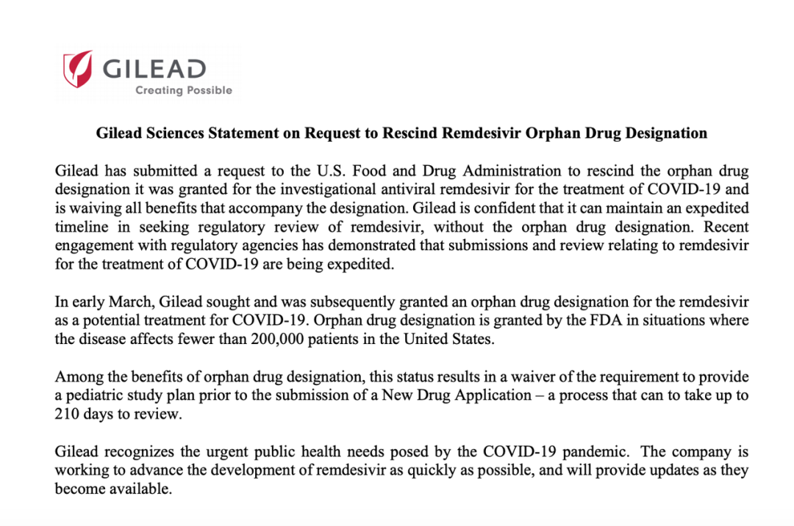

瑞德西韦获FDA正式批准成为孤儿药，它还是“人民的希望”吗？
原文链接 备份链接 北京时间 3 月 24 日，美国食品药品监督管理局（FDA）网站显示，吉利德公司开发的在研抗病毒药物瑞德西韦（Remdesivir）被授予孤儿药资格，其适应症一栏注明的正是新冠病毒疾病。 瑞德西韦肩负着抗击新冠肺炎的希 …

今晚19:00准时直播，扫码观看
美国时间 3 月 25 日，吉利德公司发布声明称，已经向美国 FDA 申请撤销瑞德西韦孤儿药的认证，并承诺将放弃孤儿药附带的利益。
翻转太快。就在 3 月 23 日，FDA 刚刚授予瑞德西韦治疗新冠肺炎的孤儿药地位。
背后原因为何？
图 | 吉利德关于撤销瑞德西韦孤儿药的申请声明。（来源：吉利德网站）
巨大的舆论压力

瑞德西韦本是“人民的希望”，但吉利德一向的产品定价策略是高高在上，其著名丙肝药物索非布韦（Sovaldi）的一个疗程费用高达 8.4 万美元。尤其是，孤儿药是针对罕见病的，一向以昂贵闻名，这就更引起人们担心，一旦瑞德西韦通过临床测试被证明治疗新冠肺炎有效，其高昂价格会让患者望而却步。这无法不让人怀疑吉利德趁火打劫、发国难财的出发点。
据纽约时报报道，多家非政府组织写信给吉利德全球首席执行官丹尼尔 • 奥戴（Daniel O’Day）说，吉利德的做法是钻了法律空子，是对政府鼓励罕见病治疗研究政策的滥用。
据美国调查新闻网站 “拦截”（The Intercept）引述“知识生态国际” 负责人詹姆斯 · 乐福（James Love）看法称，《孤儿药法案》是针对罕见病的法案，但目前新冠肺炎却不是罕见病，而是一种可能让一半美国人口感染的传染病。“知识生态国际”是一家位于美国华盛顿的非营利性机构。
詹姆斯 · 乐福说，这很荒谬，当一切供不应求时，瑞德西韦在大流行中却化身为孤儿药。
正在寻求民主党总统提名的佛蒙特州参议员伯尼 • 桑德斯（Bernie Sanders）也出来指责吉利德作为太离谱，并指出吉利德已从联邦政府获得了数千万美元的研发费用。
不是孤儿药也能快速审批
吉利德在声明中表示，该公司认识到新冠肺炎大流行带来的紧急公共卫生需求，正在加快瑞德西韦的开发进程。
孤儿药本是吉利德的节省成本并加快药物审批的捷径。孤儿药的审批有多种照顾。研发过程中 50% 临床试验费用可以申请税款抵扣，在注册审评阶段免除行政审评费用，还有众多相关基金为临床研究提供支持，以及药物上市后针对所批准适应症为期 7 年的市场独占期，即 7 年内任何药厂不得仿制该药物用于在获批适应症领域进行治疗。孤儿药上市后，其报销支付体系也会更受重视。
吉利德在声明中称，该公司将放弃孤儿药相关的利益。同时指出，公司有信心在没有孤儿药资格的情况下，加快完成瑞德西韦审评过程。
吉利德在声明中提到，孤儿药的资格会让瑞德西韦免于上市前的儿科用药研究，而这个过程将花费长达 210 天的时间。不过，吉利德表示，近日吉利德与监管机构的交流表明，瑞德西韦治疗新冠肺炎相关的申请和审评都将加速进行。
曾长期担任美国 FDA 新药审评员的思路迪医药首席执行官龚兆龙告诉 DeepTech，因为 FDA 对公共卫生危机用药的审批优先级非常高，吉利德撤销孤儿药认定并不会影响加快审批，那么儿科研究耽误的时间就不再是问题了。
公民组织全球药品准入项目的主任彼得 · 梅巴杜克（Peter Maybarduk）则对纽约时报称，吉利德不应该一开始就希望跳过儿科研究的步骤，人们应该知晓瑞德西韦对儿童的影响是否与成人有区别。
还有一个不确定性。截至北京时间 3 月 26 日，美国确诊新冠患者已经超过 6.8 万，最近几天正以每日逾万例的速度增长，很难保证美国的确诊病例不会少于 20 万。那么，如果美国的新冠确诊病例超过 20 万不再满足罕见病定义的话，即使吉利德不撤销瑞德西韦的孤儿药申请，FDA 还会保留其孤儿药资格吗？龚兆龙表示，如果孤儿药的前提不存在了，FDA 应该是可以撤销的。
-End-

原文链接 备份链接 北京时间 3 月 24 日，美国食品药品监督管理局（FDA）网站显示，吉利德公司开发的在研抗病毒药物瑞德西韦（Remdesivir）被授予孤儿药资格，其适应症一栏注明的正是新冠病毒疾病。 瑞德西韦肩负着抗击新冠肺炎的希 …
原文链接 备份链接 瑞德西韦试验怎样了？对于这项举世瞩目的试验，项目主持人、中日友好医院副院长曹彬在 3 月 1 日的一次在线直播中透露了最新进展。 曹彬是国家专家组第一批成员。他于 2019 年 12 月 31 号下午来到武汉，3 …
原文链接 备份链接 美国一个新冠肺炎患者使用瑞德西韦治愈的消息发布后，流传出很多该药有“奇效”的消息，但都仅仅是“美好的愿望”。 新冠肺炎确诊、疑似、死亡人数都在不断上升，人们太需要看到希望了。 瑞德西韦的前一代药物，对治疗猫冠状病 …
原文链接 备份链接 曹彬教授。图/新华视点 【编者按】新冠肺炎疫情暴发后，中日友好医院副院长、教育部“长江学者奖励计划”特聘教授曹彬是国家卫健委派到武汉的第一批专家。 在中华医学会呼吸病学分会、中国医师学会呼吸医师分会3月1日举办的一次连 …
原文链接 备份链接 科研界正展开一场与病毒的赛跑，希望在最短时间内找到特效药物。根据中国临床试验注册中心统计，截至2月27日凌晨，已有271项新冠肺炎（COVID-19）相关临床试验已经或即将开展，除被推荐可能有效的抗病毒药物外，各类中 …